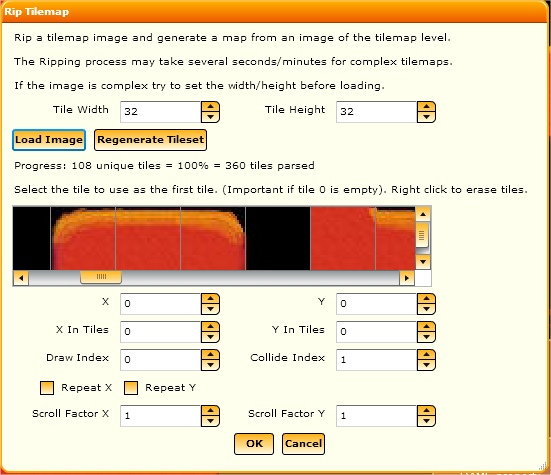

DAME has a powerful feature allowing you to scan in an image and build a tileset from it and a tilemap based on all of the unique tiles found.
First you must import a screenshot to rip the tilemaps from. It's important to have as high definition an image as you can find, and as clean as you can - i.e. one with few sprites and as few layers inside. This may mean cleaning up the image in paint software beforehand. If you rip from an image it's possible it may have had many layers with parallax scrolling and sprites. As you're trying to convert this into just 1 tileset it can lead to duplicate tiles, or tiles that shouldn't be tiles.
You can get to the window by bringing up the context menu within a Group in the Layers Tab and selecting Add->Rip Tilemap:
To initiate first make sure the tile dimensions are correct - it can take a long time to rip a tilemap so getting it wrong can be costly - and then click Load Image. If you do make a mistake click Regenerate Tileset to start again after correcting the dimensions. The ripping process will be complete when the progress displays 100%.
Next you may need to reorder or remove some tiles. Right click on any tile to mark it to be erased - this will mean that when the tilemap is actually generated the tileset will not have that tile in and any tiles in the tilemap that would have used this tile will now use tile 0 instead. Finally left click to select the tile you wish to use for tile 0 and, after setting up the main layer properties, click OK to complete the tilemap creation.